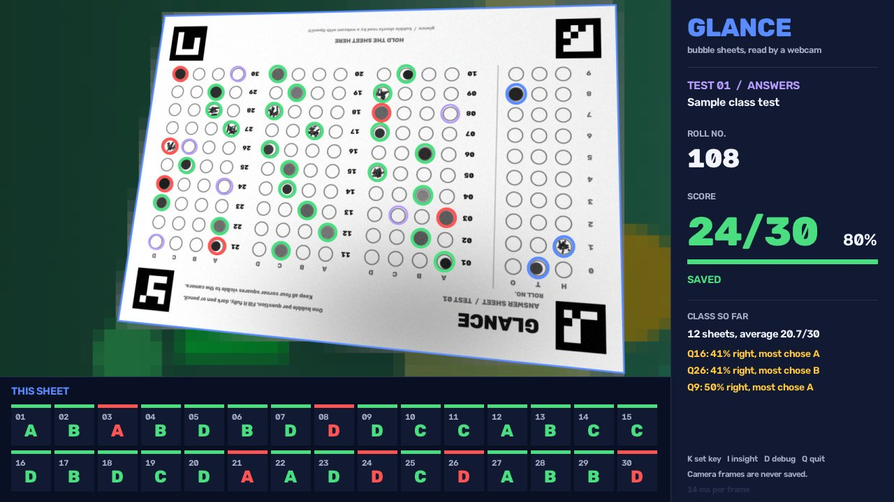

Bubble the marks once, show the sheet
One Python program and a sheet of paper. Nothing is sent anywhere, and the teacher sees the result while the copy is still in her hand.
Print the marks sheet
A small file lists the paper's questions, the maximum marks for each and its topic. Glance draws a sheet with exactly those rows, two sheets to an A4 page.
Bubble the marks
While checking a copy, the teacher fills one bubble per question for the marks given, plus the .5 bubble for a half mark, and the student's roll number.
Show it to the camera
Glance reads the sheet, waits until six frames in a row agree, shows every mark it read and the total, saves it and beeps.

Where the class is weak
Every question belongs to a topic. Glance shows the share of marks the class earned in each topic, updated after every sheet.
Slips are caught while she holds the copy
Two marks in one row are refused, not guessed. Blank rows are flagged. The marks it read stay on screen to compare with the copy.
A marks file per test
Roll number, marks for every question and the total, saved as a spreadsheet file on the teacher's laptop.

